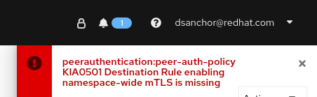

Service Mesh Security - Labs
Lab 0 - Warming up
| This is not a recommended practices guide nor intended to serve as a reference. These series of labs are oriented in such a way that you will have a first contact to the main concepts of Openshift Service Mesh and Istio security topics. |
In this preparation lab, we are going to get the oc cli binary and validate that all necessary requirements are successfully accomplished before starting the series of labs.
Along these labs, you will refer to a list of variables that have been shared with you before starting the labs. If this is not your case, please let us know.
These variables are:
-
$OCP_CONSOLE: url for accessing to the Openshift web console
-
$OCP_API: Openshift API endpoint. We will use this endpoint when accesing the cluster from the
occli. -
$USER: your private user id used for Openshift authentication
-
$PASSWORD: your secret password used for Openshift authentication
-
$APPS_NS1 and $APPS_NS2 : namespaces where you will deploy your apps during the whole series of labs. Ex:
dsanchor-1anddsanchor-2 -
$SERVICE_MESH_NS: namespace of the Istio Control Plane you will be using. This time, there will be only a single control plane shared by all:
istio-system. -
$KIALI_CONSOLE: each Service Mesh will have their own console. Use this url to access to the
Kiali console. -
$INGRESS_GW: every user will have a dedicated Ingress Gateway to manage his/her ingress traffic. Ex:
dsanchor-ingress -
$PRODUCTPAGE_HOST: external domain for the productpage service. Ex:
productpage-dsanchor-1.apps.labs.sandbox671.opentlc.com
Feel free to export these variables in your environment.
There is also a list of files needed to run the labs. These files can be found in the following github repository:
Clone the repository to your desired location, that will then be referred as $LABS_HOME during the labs:
$ git clone https://github.com/dsanchor/service-mesh-security.git $LABS_HOME
1. Access to Openshift Web Console
Use the $OCP_CONSOLE url to acces the Openshift Web Console.
A login screen will be shown as follow:

Enter your username and password and click Log In.
If you have successfully logged in, you will arrive to the main dashboard with your current projects. As seen below, you should have access to 3 namespaces, istio-system, yournamespace-1 and yournamespace-2:
It is time to get the Openshift CLI binaries for your specific OS.
1.1. Download the CLI
On the top-right (?) menu, click on Command line tools:

Then, choose the binaries according to your OS:

Extract the binaries and try it by executing the following:
$ oc version Client Version: 4.7.5 Server Version: 4.7.5 Kubernetes Version: v1.20.0+bafe72f
The above is an example of what you should get when running the command.
1.2. Access to Openshift using oc
Once we have the oc cli tool installed, we will first log in into the platform by running:
Notice that we are using the $VARS we mentioned at the beggining of the labs. If you have not exported them, you will need to manually replace them below.
$ oc login -u $USER -p $PASSWORD $OCP_API
Login successful.
You have access to the following projects and can switch between them with ' project <projectname>':
* istio-system
dsanchor-1
dsanchor-2
Using project "istio-system".
2. Access to Service Mesh Console: Kiali
Use the $KIALI_CONSOLE url to acces the Service Mesh Web Console.
A login screen will be shown as follow:
Enter your username and password and click Log In.
If you have successfully logged in, you will arrive to the main dashboard where you will see the main Service Mesh Control Plane namespace and your two Apps namespaces:
05-security/kiali-projects.png[Kiali mesh and namespaces]
Notice that this time, your two Apps namespaces are already part of the mesh, that is, we simply added the ServiceMeshMember for you, as you have done this task many times in previous labs.
We can now start deploying applications into our project so we are then ready to start securing them.
Lab 1 - Setup demo applications
The main goal of this lab is to quickly deploy a set of applications that will be used in the next labs. Notice that in this case, all Deployments are properly annotated, so the istio-proxy is autoinjected magically.
We will deploy the bookinfo app we are already familiar with, but we will do it in 2 different namespaces so we can then have some different scenarios to test.
The final set of application deployments will look like follows:

1. Deploy services in $APPS_NS1
Let’s have all services up and running in $APPS_NS1.
We will start with produtcpage service. Run:
$ oc apply -f $LABS_HOME/lab1/apps/productpage-v1.yaml -n $APPS_NS1 service/productpage created deployment.apps/productpage-v1 created serviceaccount/bookinfo-productpage created
One thing that is important during these labs, mainly for the authorization part, is the ServiceAccount. In the above command output, notice:
serviceaccount/bookinfo-productpage created
This serviceaccount/bookinfo-productpage will be used to run the productpage pods, so every application will run using different ServiceAccounts and that would mean different identities, as will see later.
To verify the above, check that within the deployment.apps/productpage-v1 we have set the serviceAccount:
$ oc get deployment.apps/productpage-v1 -n $APPS_NS1 -o yaml | grep "serviceAccount: bookinfo-productpage"
serviceAccount: bookinfo-productpage
In regular deployments, if serviceAccount field is not set, pods will run with the default ServiceAccount, which is pre-created for us when creating new projects/namespaces.
|
Let’s continue with details service:
$ oc apply -f $LABS_HOME/lab1/apps/details-v1.yaml -n $APPS_NS1 service/details created deployment.apps/details-v1 created serviceaccount/bookinfo-details created
Then, reviews:
$ oc apply -f $LABS_HOME/lab1/apps/reviews-v2.yaml -n $APPS_NS1 service/reviews created deployment.apps/reviews-v2 created serviceaccount/bookinfo-reviews created
And finally ratings:
$ oc apply -f $LABS_HOME/lab1/apps/ratings-v1.yaml -n $APPS_NS1 service/ratings created deployment.apps/ratings-v1 created serviceaccount/bookinfo-ratings created
We are almost done in $APPS_NS1, but before creating the VirtualServices and DestinationRules for every service, let’s check that we get all pods running with '2/2' containers:
$ oc get pods -n $APPS_NS1 NAME READY STATUS RESTARTS AGE details-v1-797b75485d-7ml49 2/2 Running 0 5m25s productpage-v1-5f6774b864-5p4ms 2/2 Running 0 10h ratings-v1-7d48bbb9fd-znfdd 2/2 Running 0 2m32s reviews-v2-cf45c87c7-74jbh 2/2 Running 0 3m5s
Execute the following commands to create the VirtualServices and DestinationRules for every service. We leave the productpage configuration for the end, as it is a bit special. The other services will have a simple VirtualService`that reference a single subset defined in the `DestinationRule. Run the following for details service:
$ oc apply -f $LABS_HOME/lab1/istio/details-v1.yaml -n $APPS_NS1 virtualservice.networking.istio.io/details created destinationrule.networking.istio.io/details created
Feel free to check the content of both VirtualService and DestinationRule we just created.
Then, do the same for reviews:
$ oc apply -f $LABS_HOME/lab1/istio/reviews-v2.yaml -n $APPS_NS1 virtualservice.networking.istio.io/reviews created destinationrule.networking.istio.io/reviews created
And finally ratings:
$ oc apply -f $LABS_HOME/lab1/istio/ratings-v1.yaml -n $APPS_NS1 virtualservice.networking.istio.io/ratings created destinationrule.networking.istio.io/ratings created
In the case of the productpage service, two more objects are created:
-
a
Route, so the service can be externally accesible. Notice that it will be a secure route (simpletls) with passthrough termination. This means that thetlstermination is not performed at the router side but the ingress gateway instead. -
an ingress
Gateway, that will use an specificselectorso the configuration will be applied on your $INGRESS_GW (in previous labs/workshops, we all shared the same gateway pods, but in these labs, we will have an specific gateway deployment per user). There is also sometlsconfig set to include a pre-created set of certificates for this labs (underapps-credential Secret).
To double check and understand what we just described above, run the following command and inspect the output YAML (try to see all details from the Route and Gateway):
$ oc process -f $LABS_HOME/lab1/istio/productpage-v1.yaml -p PRODUCTPAGE_HOST=$PRODUCTPAGE_HOST -p INGRESS_GW=$INGRESS_GW -p APPS_NS=$APPS_NS1 -p MESH_NS=$SERVICE_MESH_NS -o yaml
Once reviewed, apply the manifests:
$ oc process -f $LABS_HOME/lab1/istio/productpage-v1.yaml -p PRODUCTPAGE_HOST=$PRODUCTPAGE_HOST -p INGRESS_GW=$INGRESS_GW -p APPS_NS=$APPS_NS1 -p MESH_NS=$SERVICE_MESH_NS -o yaml | oc apply -f - route.route.openshift.io/dsanchor-ingress-productpage created gateway.networking.istio.io/dsanchor-ingress-productpage created virtualservice.networking.istio.io/productpage created destinationrule.networking.istio.io/productpage created
Get the accesible endpoint of the application:
$ oc get route/${INGRESS_GW}-productpage -o template='http://{{.spec.host}}' -n istio-system
http://productpage-dsanchor-1.apps.labs.sandbox671.opentlc.com
Test the application in your Web browser. You will be redirected to an https url and warned about the self-signed certificate we have configured:

Accept the risk ;-) and you will land in the following page:

Click on Access to productpage link (bottom left of the page) and voila:

Keep a test running on the background to generate telemetry (don’t forget to use your domain in the url):
watch -n1 curl -k https://${PRODUCTPAGE_HOST}/productpage
If you check then the graph in Kiali, you should get a similar flow:

Notice the starting node in the graph… it should be your dedicated ingress gateway.
2. Deploy services in $APPS_NS2
For a different scenario that will be later introduced, we will deploy just the reviews and ratings service in $APPS_NS2.
Deploy reviews-v3:
$ oc apply -f $LABS_HOME/lab1/apps/reviews-v3.yaml -n $APPS_NS2 service/reviews created deployment.apps/reviews-v3 created serviceaccount/bookinfo-reviews created
And then ratings-v1:
$ oc apply -f $LABS_HOME/lab1/apps/ratings-v1.yaml -n $APPS_NS2 service/ratings created deployment.apps/ratings-v1 created serviceaccount/bookinfo-ratings created
Create the specific set of VirtualServices and DestinationRules:
For reviews:
$ oc apply -f $LABS_HOME/lab1/istio/reviews-v3.yaml -n $APPS_NS2 virtualservice.networking.istio.io/reviews created destinationrule.networking.istio.io/reviews created
For ratings:
$ oc apply -f $LABS_HOME/lab1/istio/ratings-v1.yaml -n $APPS_NS2 virtualservice.networking.istio.io/ratings created destinationrule.networking.istio.io/ratings created
So far, we just deployed and configured some services in $APPS_NS2, but these are not yet accesible. The current request flow looks like:

But in some scenarios during these labs, we want to make use of the services we have deployed on $APPS_NS2 as in next diagram:

In order to achieve this, we will have to set certain env variable in productpage to target to a different reviews service than the default one (same namespace). Execute the following to configure the reviews service in $APPS_NS2 as target service:
$ oc set env deployment/productpage-v1 -e REVIEWS_HOSTNAME=reviews.$APPS_NS2.svc.cluster.local -n $APPS_NS1 deployment.apps/productpage-v1 updated
A rollout of productpage`is triggered and then, test the service again. You should get the `ratings with red stars:
And if you keep sending requests.. you would get the following graph (notice that we jump from productpage in your $APPS_NS1 to reviews in your $APPS_NS2):

Once tested, we will move back to default, as we will start from the first scenario, where all services run in $APPS_NS1.
Execute the following to move back to default reviews service, which runs in same namespace:
$ oc set env deployment/productpage-v1 -e REVIEWS_HOSTNAME=reviews -n $APPS_NS1 deployment.apps/productpage-v1 updated
It is time to start securing our services calls as in this lab, we have just deployed all services and securely exposed externally (simple tls) but we did nothing about this within the mesh (so internal calls still are not secured with tls/mtls).
Lab 2 - PeerAuthentication
In this lab, we are going to configure mTLS for all comunications between our existing services.
One of the possibilities would be to auto enable mTLS globally in the mesh during the ServiceMeshControlPlane installation process.
In our case, we chose not to do it that way, so we can reach this lab and enable mTLS in each service to service communication as an exercise to practice with this kind of scenarios.
| This lab about mTLS is very similar to the one we did in Service Mesh - Introduction, but it is required to move to next labs and also, good to remember what we did and how we did it. This time, we will apply the configuration in a few steps only. |
1. Enforce mTLS in our namespace $APPS_NS1
First, we are going to enforce that any service to service communication in our namespace is covered by mTLS.
To do so, we will create a PeerAuthentication object that set the mTLS mode to strict:
$ oc apply -f $LABS_HOME/lab2/peer-authentication-strict.yaml -n $APPS_NS1 peerauthentication.security.istio.io/peer-auth-policy created
When setting PeerAuthentication to STRICT namespace wide, we will get an error in Kiali telling that "Destination Rule enabling namespace-wide mTLS is missing". In our case, we don’t really care, as in this lab, we will enable mTLS service by service in the namespace.

Ignore it for the rest of the lab.
|
Test your application again. It does not work anymore. You should get an error like this one:
upstream connect error or disconnect/reset before headers. reset reason: connection termination
And that is because we are enforcing mTLS and our services have not been configured to support it yet.
To do so, we will take advantage of an interesting Istio feature wich is the ISTIO_MUTUAL traffic policy: we let the proxy serves an Istio managed certificate associated per ServiceAccount to have mTLS without any change in our application.
This ServiceAccount per service will let us identify the caller independently as each ServiceAccount will have a certificate associated to it. We will debug a bit to understand what happens under the covers.
2. Configure mTLS in our services under $APPS_NS1
What will do next is to start setting ISTIO_MUTUAL in our services. We will achieve it by adding a trafficPolicy section of the DestinationRule where will describe the tls mode. In this case, it will be set to ISTIO_MUTUAL.
Let’s first understand the changes that we are going to apply in every DestinationRule. For that, we will get one before applying any change:
$ oc get destinationrule/productpage -o yaml -n $APPS_NS1
...
(let's focus on the spec part of it)
...
spec:
host: productpage
subsets:
- labels:
version: v1
name: v1
Apply the changes:
$ oc patch destinationrule/productpage --type=merge -p '{"spec":{"trafficPolicy":{"tls":{"mode":"ISTIO_MUTUAL"}}}}' -n $APPS_NS1
destinationrule.networking.istio.io/productpage patched
And get again the same DestinatioRule to see the trafficPolicy section that has been added:
$ oc get destinationrule/productpage -o yaml -n $APPS_NS1
...
(let's focus on the spec part of it)
...
spec:
host: productpage
subsets:
- labels:
version: v1
name: v1
trafficPolicy:
tls:
mode: ISTIO_MUTUAL
We do the same for every service. Patch the one for details:
$ oc patch destinationrule/details --type=merge -p '{"spec":{"trafficPolicy":{"tls":{"mode":"ISTIO_MUTUAL"}}}}' -n $APPS_NS1
destinationrule.networking.istio.io/details patched
Then reviews:
$ oc patch destinationrule/reviews --type=merge -p '{"spec":{"trafficPolicy":{"tls":{"mode":"ISTIO_MUTUAL"}}}}' -n $APPS_NS1
destinationrule.networking.istio.io/reviews patched
And last from $APPS_NS1 is ratings:
$ oc patch destinationrule/ratings --type=merge -p '{"spec":{"trafficPolicy":{"tls":{"mode":"ISTIO_MUTUAL"}}}}' -n $APPS_NS1
destinationrule.networking.istio.io/ratings patched
Test the application again and check that is working fine. You can also leave some tests running (don’t forget to change to your domain:
watch -n1 curl -k https://${PRODUCTPAGE_HOST}/productpage
Finally, move to Kiali and select the Security check box in the graph Display options. We should get a lock icon between each service call:

3. Enforce mTLS and configure services in $APPS_NS2
We will apply the same changes in $APPS_NS2:
-
Create a
PeerAuthenticationwith STRICT mode
$ oc apply -f $LABS_HOME/lab2/peer-authentication-strict.yaml -n $APPS_NS2 peerauthentication.security.istio.io/peer-auth-policy created
-
Set
ISTIO_MUTUALin every service.
$ oc patch destinationrule/reviews --type=merge -p '{"spec":{"trafficPolicy":{"tls":{"mode":"ISTIO_MUTUAL"}}}}' -n $APPS_NS2
destinationrule.networking.istio.io/reviews patched
$ oc patch destinationrule/ratings --type=merge -p '{"spec":{"trafficPolicy":{"tls":{"mode":"ISTIO_MUTUAL"}}}}' -n $APPS_NS2
destinationrule.networking.istio.io/ratings patched
We have now finished setting mTLS between all our services calls. We can move now to the first part of the authorization labs.
4. Optional: add namespace-wide DestinationRule for mTLS
In case you want to get rid of the PeerAuthentication validation error, you could create a DestinationRule that would cover all your services in the namespace with mTLS (As you could have checked already, all our services are fully working and have mTLS. We have set it individually instead, but if the validation error really annoys you, feel free to remove it).
This is the YAML file you could use as template, replace $APPS_NS with your namespace before applying (you must do it with both $APPS_NS1 and $APPS_NS2):
apiVersion: networking.istio.io/v1alpha3
kind: DestinationRule
metadata:
name: enable-mtls-ns-wide
namespace: ${APPS_NS}
spec:
host: "*.${APPS_NS}.svc.cluster.local"
trafficPolicy:
tls:
mode: ISTIO_MUTUAL
Lab 3 - Authorization: part 1
In this workshop, we will have two different authorization related labs. One after we have introduced the PeerAuthentication security part that we just did (Lab 2), and then, the second part after seeing the RequestAuthentication (Lab 4).
First part will be about workload-to-workload authorization, while the second part will be about end-user-to-workload.
In this first part, we will introduce the concept of peer identities (thanks to the mTLS authentication we configured in previous labs) and also, we will set a more wide policy that will enable certain services from $APPS_NS1 to access others in $APPS_NS2.
1. Brief reminder about AuthorizationPolicy
The AuthorizationPolicy custom resource is mainly divided in three parts: a selector, an action and a list of rules.
-
The selector field specifies the target of the policy.
-
The action field specifies whether to allow or deny the request.
-
The rules specify when to trigger the action
-
The from field in the rules specifies the sources of the request
-
The to field in the rules specifies the operations of the request
-
The when field specifies the conditions needed to apply the rule
-
We will be creating this kind of manifest during the following labs, so in case you have any doubt, please feel free to ask. I also recommend to have a look at the official documentation.
2. Deny all policy
Before starting to create 'AuthorizationPolicies' covering different rules and conditions, we will create a 'deny all' policy in both $APPS_NS1 and $APPS_NS2.
Then content of the AuthorizationPolicy is:
kind: AuthorizationPolicy
apiVersion: security.istio.io/v1beta1
metadata:
name: deny-all-in-ns
spec: {}
As per doc, the above means:
-
if no
selector, the authorization policy will be applied to all workloads in the same namespace as the authorization policy. -
if no
rules, the match will never occur. This is equivalent to setting a default of deny for the target workloads.
Apply this policy in both namespaces. First, in $APPS_NS1:
$ oc apply -f $LABS_HOME/lab3/deny-all.yaml -n $APPS_NS1 authorizationpolicy.security.istio.io/deny-all-in-ns created
And then, in $APPS_NS2:
$ oc apply -f $LABS_HOME/lab3/deny-all.yaml -n $APPS_NS2 authorizationpolicy.security.istio.io/deny-all-in-ns created
Test the application again and see that we get an RBAC: denied access error. If you left some test running in the background, you would have a similar graph to the one shown below in Kiali:

We will start now given access gradually to services.
3. Allow access from dedicated Ingress Gateway to Productpage service
The first allow policy we will define will be to allow access from your dedicated ingress Gateway to your productpage services that lives in $APPS_NS1.
We will do so by enabling access only from the identity of your dedicated ingress Gateway as a valid principal. But… where is that identity coming from? How do I know it?
The answer is that in the Kubernetes world, Istio uses an identity associated to each ServiceAccount. Remember that we must have mTLS enabled, so for each caller service, there will be a client certificate present.
To better understand it, we will set the rbac log level to debug in our productpage pod and determine what is the value coming in the source.principal attribute (which is the attribute that is used to be checked as principal, according to the docs)
Run the following command to set the proper rbac log level:
$ oc exec -n $APPS_NS1 $(oc get pods -n $APPS_NS1 -o name | grep productpage) -c istio-proxy -- curl -X POST localhost:15000/logging?rbac=debug
In last command, we just run curl -X POST localhost:15000/logging?rbac=debug on the istio-proxy container within the running productpage pod. Envoy exposes an API on port 15000 to manage different admin capabilities. In our case, we use /logging to manage logging levels.
|
And now, open the istio-proxy logs of your productpage service by running:
$ oc logs -f -n $APPS_NS1 $(oc get pods -n $APPS_NS1 -o name | grep productpage) -c istio-proxy
Try to access to the '/productpage' url again to generate some requests to the service and have a look at the log. The output should be similar to:
2021-04-02T20:44:54.106985Z debug envoy rbac [external/envoy/source/extensions/filters/http/rbac/rbac_filter.cc:74] checking request: requestedServerName: outbound_.9080_.v1_.productpage.dsanchor-1.svc.cluster.local, sourceIP: 10.131.0.26:54774, directRemoteIP: 10.131.0.26:54774, remoteIP: 10.131.0.10:0,localAddress: 10.128.2.24:9080, ssl: uriSanPeerCertificate: spiffe://cluster.local/ns/istio-system/sa/dsanchor-ingress-service-account, dnsSanPeerCertificate: , subjectPeerCertificate: , headers: ':authority', 'productpage-dsanchor-1.apps.labs.sandbox671.opentlc.com'
':path', '/productpage'
':method', 'GET'
'upgrade-insecure-requests', '1'
'user-agent', 'Mozilla/5.0 (X11; Fedora; Linux x86_64) AppleWebKit/537.36 (KHTML, like Gecko) Chrome/84.0.4147.125 Safari/537.36'
'accept', 'text/html,application/xhtml+xml,application/xml;q=0.9,image/webp,image/apng,*/*;q=0.8,application/signed-exchange;v=b3;q=0.9'
'sec-fetch-site', 'none'
'sec-fetch-mode', 'navigate'
'sec-fetch-user', '?1'
'sec-fetch-dest', 'document'
'accept-encoding', 'gzip, deflate, br'
'accept-language', 'en-US,en;q=0.9'
'x-forwarded-for', '10.131.0.10'
'x-forwarded-proto', 'https'
'x-request-id', '37de7be8-472b-9ffb-a74b-e01b8254d40e'
'x-b3-traceid', '76436a774c694719fb36cde29bdfd2ba'
'x-b3-spanid', 'fb36cde29bdfd2ba'
'x-b3-sampled', '1'
'content-length', '0'
'x-envoy-internal', 'true'
'x-forwarded-client-cert', 'By=spiffe://cluster.local/ns/dsanchor-1/sa/bookinfo-productpage;Hash=4bb17407ad4127a1e3c08700d081c0fd3700207320be7ee1ddb460c2a273fd70;Subject="";URI=spiffe://cluster.local/ns/istio-system/sa/dsanchor-ingress-service-account'
, dynamicMetadata: filter_metadata {
key: "istio_authn"
value {
fields {
key: "request.auth.principal"
value {
string_value: "cluster.local/ns/istio-system/sa/dsanchor-ingress-service-account"
}
}
fields {
key: "source.namespace"
value {
string_value: "istio-system"
}
}
fields {
key: "source.principal"
value {
string_value: "cluster.local/ns/istio-system/sa/dsanchor-ingress-service-account"
}
}
fields {
key: "source.user"
value {
string_value: "cluster.local/ns/istio-system/sa/dsanchor-ingress-service-account"
}
}
}
}
In my example, we see cluster.local/ns/istio-system/sa/dsanchor-ingress-service-account in many places (in your case, it will be very similar, you should see your user name instead of dsanchor). One of this places is the source.principal attribute. We got it.
As you can tell, the value that will be set as principal when mTLS is enabled will always take the following form:
cluster.local/ns/<CALLER_NS>/sa/<CALLER_SERVICE_ACCOUNT>
Let’s finally configure the AuthorizationPolicy. We will first validate what we will be creating for this very first time:
$ oc process -f $LABS_HOME/lab3/allow-ingress-productpage.yaml -p INGRESS_GW=$INGRESS_GW -o yaml -n $APPS_NS1
Review that:
-
You have a proper selector matching the
productpageservice -
Action is set to
ALLOW -
Within
rules, thefrommust have a valid principal (as we have previously identified) and we allow all paths into.
Finally, apply the resulting AuthorizationPolicy:
$ oc process -f $LABS_HOME/lab3/allow-ingress-productpage.yaml -p INGRESS_GW=$INGRESS_GW -o yaml -n $APPS_NS1 | oc apply -f - -n $APPS_NS1 authorizationpolicy.security.istio.io/allow-ingress-productpage created
Test the application again and you should be able to reach it, although you still won’t have access to the details and ratings services:
And the following graph can be seen in Kiali:

We are now restricted all services behind the productpage service. Let’s start activating accesses workload by workload.
4. Allow access between services using principals
We have now to allow the following service calls:
-
productpagemust be able to access bothdetailsandreviewsservices. -
reviewsservice must reachratings.
Let’s configure then the required AuthorizationPolicies. Feel free to just process the template before applying the changes to understand what we are creating (as we did in previous labs). You can also check the application after applying new policies so you will be able to notice that we are enabling access step by step.
-
To enable access from
productpagetodetailsservice.
$ oc process -f $LABS_HOME/lab3/allow-details.yaml -p APPS_NS=$APPS_NS1 -o yaml -n $APPS_NS1 | oc apply -f - -n $APPS_NS1 authorizationpolicy.security.istio.io/allow-details created
-
To enable access from
productpagetoreviewsservice.
$ oc process -f $LABS_HOME/lab3/allow-reviews.yaml -p APPS_NS=$APPS_NS1 -o yaml -n $APPS_NS1 | oc apply -f - -n $APPS_NS1 authorizationpolicy.security.istio.io/allow-reviews created
-
To enable access from
reviewstoratingsservice.
$ oc process -f $LABS_HOME/lab3/allow-ratings.yaml -p APPS_NS=$APPS_NS1 -o yaml -n $APPS_NS1 | oc apply -f - -n $APPS_NS1 authorizationpolicy.security.istio.io/allow-ratings created
If you test the application again, everything should work fine:

And this the Kiali graph again where will see all interactions between servies working as expected:

5. Extra check: access from independant pod
To ensure and understand that our AuthorizationPolicies are working fine, that is, only certain services can call the others, we will deploy an independant pod and try to reach the existing services.
Deploy a simple ubi pod:
$ oc apply -f $LABS_HOME/lab3/ubi.yaml -n $APPS_NS1 deployment.apps/ubi created
Wait until the pod is runnig and ssh into the pod to run certain tests:
$ oc rsh -n $APPS_NS1 $(oc get pods -n $APPS_NS1 -o name | grep ubi) Defaulting container name to ubi. Use 'oc describe pod/ubi-78d69f44c6-ffcdh -n dsanchor-1' to see all of the containers in this pod. sh-4.4$
Once inside the pod, run the following tests:
-
curl -v http://ratings:9080/ratings/0
-
curl -v http://details:9080/details/0
-
curl -v http://reviews:9080/reviews/0
What did you get? All request should have been rejected with a similar response to this:
< HTTP/1.1 403 Forbidden < content-length: 19 < content-type: text/plain < date: Fri, 02 Apr 2021 21:55:16 GMT < server: envoy < x-envoy-upstream-service-time: 3 < * Connection #0 to host details left intact RBAC: access denied
6. Allow access between services from different namespaces
In this lab, we will create a wider policy that will allow any service running in $APPS_NS1 to access service in $APPS_NS2.
Before creating this policy, we will first modify the productpage service configuration running in $APPS_NS1 to target the reviews service in $APPS_NS2. As we did in lab 1, run:
$ oc set env deployment/productpage-v1 -e REVIEWS_HOSTNAME=reviews.$APPS_NS2.svc.cluster.local -n $APPS_NS1 deployment.apps/productpage-v1 updated
Test that the productpage service cannot reach the reviews service in $APPS_NS2 after the config change:
05-security/productpage-accesing-ns2.png[RBAC error ns2]
And now, process the following AuthorizationPolicy template to check what we will be creating:
$ oc process -f $LABS_HOME/lab3/allow-reviews-from-ns1.yaml -p APPS_NS1=$APPS_NS1 -o yaml -n $APPS_NS2
Have a look at the .spec.rules.from.source.namespaces and check if the value is exactly your $APPS_NS1. Also, as we did before, verify that the selector is the one expected. This time, we will just allow the GET operation in all paths.
If everything looks as expected, apply the changes. Notice that we are creating this manifest in the $APPS_NS2 as it is where our selected workload runs:
$ oc process -f $LABS_HOME/lab3/allow-reviews-from-ns1.yaml -p APPS_NS1=$APPS_NS1 -n $APPS_NS2 | oc apply -f - -n $APPS_NS2 authorizationpolicy.security.istio.io/allow-reviews-from-ns1 created
And you have to also enable access from reviews to ratings service within $APPS_NS2 (as we did in $APPS_NS1):
$ oc process -f $LABS_HOME/lab3/allow-ratings.yaml -p APPS_NS=$APPS_NS2 -o yaml -n $APPS_NS2 | oc apply -f - -n $APPS_NS2 authorizationpolicy.security.istio.io/allow-ratings created
Verify that the application works and that you see calls between services from different namespaces as shown below:
Lab 4 - RequestAuthentication
In this next lab, we will introduce the concept of end-user-authentication by configuring a RequestAuthentication in our service mesh.
This time, Istio enables request-level authentication with JSON Web Token (JWT) validation.
Before starting, I truly recommend to spend some minutes reading an introduction about JWT.
This fourth lab, will be very brief as the authentication part with JWT is very simple and all the value comes together with the authorization part. In lab 5, we will deeply dive into all these concepts together.
1. Clean up resources from previous lab
Firstly, we will remove all the AuthorizationPolicies we created in last lab. We will keep the PeerAuthentication as we still want to enforce STRICT mTLS between services calls.
Ingress policy:
$ oc delete authorizationpolicy.security.istio.io/allow-ingress-productpage -n $APPS_NS1 authorizationpolicy.security.istio.io "allow-ingress-productpage" deleted
From productpage to details:
$ oc delete authorizationpolicy.security.istio.io/allow-details -n $APPS_NS1 authorizationpolicy.security.istio.io "allow-details" deleted
From productpage to reviews:
$ oc delete authorizationpolicy.security.istio.io/allow-reviews -n $APPS_NS1 authorizationpolicy.security.istio.io "allow-reviews" deleted
From reviews to ratings:
$ oc delete authorizationpolicy.security.istio.io/allow-ratings -n $APPS_NS1 authorizationpolicy.security.istio.io "allow-ratings" deleted
From $APPS_NS1 to reviews in $APPS_NS2:
$ oc delete authorizationpolicy.security.istio.io/allow-reviews-from-ns1 -n $APPS_NS2 authorizationpolicy.security.istio.io "allow-reviews-from-ns1" deleted
Remove deny-all:
$ oc delete authorizationpolicy.security.istio.io/deny-all-in-ns -n $APPS_NS1 authorizationpolicy.security.istio.io "deny-all-in-ns" deleted
And also, just to be back to first scenario, we will use only services from $APPS_NS1. This means, we have to configure productpage service accordingly:
$ oc set env deployment/productpage-v1 -e REVIEWS_HOSTNAME=reviews -n $APPS_NS1 deployment.apps/productpage-v1 updated
Test the application again.. everything should work without any RBAC or authentication error.
2. Enforce JWT authentication
The first step we do now is to enable JWT authentication by creating a simple RequestAuthentication object.
We will use Google’s OAuth 2.0 authentication system for user login, so we will have to first discover some important configuration data from the OIDC discovery configuration url.
Google’s OIDC configuration is accesible here: https://accounts.google.com/.well-known/openid-configuration.
If you access to that endpoint, you will get a similar output to this:
{
"issuer": "https://accounts.google.com",
"authorization_endpoint": "https://accounts.google.com/o/oauth2/v2/auth",
"device_authorization_endpoint": "https://oauth2.googleapis.com/device/code",
"token_endpoint": "https://oauth2.googleapis.com/token",
"userinfo_endpoint": "https://openidconnect.googleapis.com/v1/userinfo",
"revocation_endpoint": "https://oauth2.googleapis.com/revoke",
"jwks_uri": "https://www.googleapis.com/oauth2/v3/certs",
"response_types_supported": [
"code",
"token",
"id_token",
"code token",
"code id_token",
"token id_token",
"code token id_token",
"none"
],
"subject_types_supported": [
"public"
],
"id_token_signing_alg_values_supported": [
"RS256"
],
"scopes_supported": [
"openid",
"email",
"profile"
],
"token_endpoint_auth_methods_supported": [
"client_secret_post",
"client_secret_basic"
],
"claims_supported": [
"aud",
"email",
"email_verified",
"exp",
"family_name",
"given_name",
"iat",
"iss",
"locale",
"name",
"picture",
"sub"
],
"code_challenge_methods_supported": [
"plain",
"S256"
],
"grant_types_supported": [
"authorization_code",
"refresh_token",
"urn:ietf:params:oauth:grant-type:device_code",
"urn:ietf:params:oauth:grant-type:jwt-bearer"
]
}
In order to configure the RequestAuthentication for this lab, we will just use the following attributes from above:
-
issuer: https://accounts.google.com. This will be the only valid issuing authority inside a token.
-
jwks_uri: https://www.googleapis.com/oauth2/v3/certs, which basically tells from where to obtain the
public keyto verify the signature of a token.
Once we have this information, let me show you the RequestAuthentication YAML file we will use as template:
apiVersion: security.istio.io/v1beta1
kind: RequestAuthentication
metadata:
name: ${INGRESS_GW}
namespace: istio-system
spec:
selector:
matchLabels:
app: ${INGRESS_GW}
jwtRules:
- forwardOriginalToken: true
issuer: ${OIDC_ISSUER_URL}
jwksUri: ${OIDC_JWKS_URI}
The above YAML basically means:
"A RequestAuthentication will be applied on those pods running in istio-system which match the label app: $INGRESS_GW (that is, your dedicated ingress Gateway). The JWT issuer is $OIDC_ISSUER_URL and the certs to verify the signature of the token will be obtained from $OIDC_JWKS_URI. Also, the JWT token will be forwarded to upstream service."
Run the following command to create the RequestAuthentication:
$ oc process -f $LABS_HOME/lab4/request-authentication.yaml -p INGRESS_GW=$INGRESS_GW OIDC_ISSUER_URL=https://accounts.google.com OIDC_JWKS_URI=https://www.googleapis.com/oauth2/v3/certs -n istio-system | oc apply -f - -n istio-system requestauthentication.security.istio.io/dsanchor-ingress-request-authentication created
If you test the application again it should still work, even though we have not provide any token. And that is because when requests carry no token, they are accepted by default. To reject requests without tokens, provide authorization rules that specify the restrictions for specific operations, for example paths or actions. And that’s what will do next.
Create a simple AuthorizationPolicy that forces the request to contain a valid requestPrincipal (just to avoid confusions with previous labs, it is important to mention that we used principals when using workload-to-workload authentication and for this next lab, we will use requestPrincipals. More details can be found here).
Execute:
$ oc process -f $LABS_HOME/lab4/simple-auth-policy.yaml -p INGRESS_GW=$INGRESS_GW -n istio-system | oc apply -f - -n istio-system authorizationpolicy.security.istio.io/dsanchor-ingress-policy created
If you now test the application again, you will get an RBAC: access denied error.
We have to provide a valid JWT token… and the process of getting a token from the OAuth server is out of the scope of Istio. Istio will just verify incoming tokens and will extract the data from the token body, so it can later be used during the authorization phase.
In next lab, we will deploy some utilities on Openshift that will be configured to automatically manage the OAuth flow of getting a valid token against Google’s OAuth server, but now, we would like to test what we just did.
To do so, I will provide a temporal token that can be used for this test. Please ask if you haven’t be given one and export it as $JWT_TOKEN
Then, test the application using next curl:
curl -v -k -H "Authorization: Bearer $JWT_TOKEN" https://${PRODUCTPAGE_HOST}/productpage
Did it work? Hope so. That means, the token you have provided is valid.
If you try againg using your web browser (that is, no token is provided), it would fail.
Lab 5 - Authorization: part 2
In this last lab, we will first introduce one way of managing the JWT and the OAuth2 integration flow with Google’s OAuth server, so we don’t have to manually get a token.
Then, we will create a new authorization scenario that will use the end-user identity and different claims from the JWT.
1. Extra: OAuth flow implementation
As mentioned in lab 4, Istio provides just an authentication and authorization mechanism for JWT, but it does not provide anything to help obtaning the JWT token.
This implementation shown in this section is just an example. In a few words, we will use an ext_auth type EnvoyFilter that will intercept every call at ingress level and forward it to an oauth2-proxy. that will manage the integration with Google OAuth server. It is based on oauth2-proxy project, although in our case, it won’t act as a proxy, but a simple oauth helper beside our service mesh.
Next diagram shows all the interactions between all pieces involved (I have skipped the Openshift Router, so I only focus on elements once entering in the Service Mesh).
Another possiblity would be to implement this mechanism with a WebAssembly module (WASM). This project could be used as a good starting point.
1.1. Deploy an OAuth2 proxy (helper)
Let’s now put all we have described above in practice. First, we need to deploy an oauth2-proxy that will be used to manage the OAuth2 workflow.
We will deploy it under our $APPS_NS1:
$ oc process -f $LABS_HOME/lab5/oauth2-proxy.yaml -p INGRESS_GW=$INGRESS_GW -p APP_DOMAIN=$PRODUCTPAGE_HOST -p CLIENT_ID="805248467061-9nkgmsfmdu3me5d4ngiemvb1en3s550b.apps.googleusercontent.com" -p CLIENT_SECRET="-RPI_Pgs_IKn0sIkYiB_7DAn" -p COOKIE_SECRET=$(openssl rand -hex 16) -p OIDC_ISSUER_URL=https://accounts.google.com OAUTH_NS=$APPS_NS1 -n $APPS_NS1 | oc apply -f - -n $APPS_NS1 secret/oauth2-proxy created service/oauth2-proxy created deployment.apps/oauth2-proxy created virtualservice.networking.istio.io/oauth2-proxy created destinationrule.networking.istio.io/oauth2-proxy created serviceentry.networking.istio.io/accounts-google created serviceentry.networking.istio.io/oauth2-googleapis created
There were some basic objects created that you are familiar to as in any regular OCP+Mesh application deployment: Service, Deployment, VirtualService and DestinationRule. Then, there are two ServiceEntries that have been created in order to allow access to external resources which are Google’s related. This is because we have restricted the access to any external resource from within the Service Mesh (as we are in the Security Workshop, we would like to have certain control to which external resources are consumed). To achieve this goal, we configured our ServiceMeshControlPlane with a REGISTRY_ONLY outboutTrafficPolicy mode. Feel free to have a look at the configuration and the ServiceEntries as well.
|
If may take some restarts to have the application running since the oauth2-proxy container tries to load the OIDC configuration from an external resource and the istio-proxy may not have started yet. Finally, you should see a similar output on the oauth2-proxy contatiner within the pod:
[2021/04/03 20:49:58] [proxy.go:59] mapping path "/" => static response 200 [2021/04/03 20:49:58] [oauthproxy.go:137] OAuthProxy configured for OpenID Connect Client ID: 805248467061-9nkgmsfmdu3me5d4ngiemvb1en3s550b.apps.googleusercontent.com [2021/04/03 20:49:58] [oauthproxy.go:143] Cookie settings: name:_oauth2_proxy_dsanchor-ingress secure(https):true httponly:true expiry:4h0m0s domains: path:/ samesite:lax refresh:after 30m0s [2021/04/03 20:49:58] [http.go:57] HTTP: listening on 0.0.0.0:4180
Then, we will configure an EnvoyFilter on our dedicated ingress Gateway that will intercept every call entering the mesh. We will use an ext_authz filter. Run the following:
$ oc process -f $LABS_HOME/lab5/oauth2-envoy-filter.yaml -p INGRESS_GW=$INGRESS_GW -p OAUTH_NS=$APPS_NS1 -n istio-system | oc apply -f - -n istio-system envoyfilter.networking.istio.io/dsanchor-ingress created
Test the application now.
You will first be redirected to select your gmail account:
And once you have selected your preferred account, you will land into the bookinfo application.
Just to mention, any google account would be valid for this test… you can try if you have different ones (Ex: @gmail or your corporate account).
We will add some more specific AuthorizationPolicies now.
2. Configure RequestAuthentication in $APPS_NS1
First step before creating any AuthorizationPolicy that uses any related data/attribute from the JWT token is to set a RequestAuthentication that would cover the scope of the workload (For instance, we already did it for the dedicated ingress Gateway).
We will now create a namespace-wide RequestAuthentication for $APPS_NS1 namespace. Run the following command:
$ oc process -f $LABS_HOME/lab5/apps-ns-request-authentication.yaml -p APPS_NS=$APPS_NS1 OIDC_ISSUER_URL=https://accounts.google.com OIDC_JWKS_URI=https://www.googleapis.com/oauth2/v3/certs -n $APPS_NS1 | oc apply -f - -n $APPS_NS1 requestauthentication.security.istio.io/dsanchor-1-request-authentication created
As any other resource we create on the cluster, I encourage you to have a look at what you have exactly created. For instance, this time you could run:
$ oc get requestauthentication.security.istio.io/$APPS_NS1-request-authentication -o yaml -n $APPS_NS1
apiVersion: security.istio.io/v1beta1
kind: RequestAuthentication
metadata:
name: dsanchor-1-request-authentication
namespace: dsanchor-1
spec:
jwtRules:
- forwardOriginalToken: true
issuer: https://accounts.google.com
jwksUri: https://www.googleapis.com/oauth2/v3/certs
3. Limit access based on hosted domain claim
One of the claims that could be used to limit access to certain resources could be the hosted domain or hd.
To understand what a hosted domain is, please, feel free to read about it here.
Also, let’s put the rbac log level to debug on your dedicated ingress Gateway, so we will be able to see all the info we get from the JWT (and all the claims that can be used as a rule condition, such as the hd):
$ oc exec -n istio-system $(oc get pods -n istio-system -o name | grep $INGRESS_GW) -c istio-proxy -- curl -X POST localhost:15000/logging?rbac=debug
And now, run some tests again your application and check the logs from your dedicated ingress Gateway. What claims do you see for your user? What’s the hd you see from your user?
Try to find the request.auth.claims attribute in logs. And there, you should find an hd attribute. An example of an hd would be redhat.com for email addresses like dsanchor@redhat.com
|
The hd is hihgly dependant on the user account you have choosen. For instance, if you chose an @gmail you won’t see any hd. Instead, use your corporate account to get a valid hd.
| If you already logged in with an @gmail.com account or you want to log with a different account, use the https://${PRODUCTPAGE_HOST}/oauth2/start to trigger a new login process. |
You can see the logs by executing the following command:
$ oc logs -f -n istio-system $(oc get pods -n istio-system -o name | grep $INGRESS_GW)
We will use the hd we have just discovered to create a new AuthorizationPolicy (now on, we will use $HD to refer it, export it):
$ oc process -f $LABS_HOME/lab5/hd-policy.yaml -p HD=$HD -n $APPS_NS1 | oc apply -f - -n $APPS_NS1 authorizationpolicy.security.istio.io/productpage-hd created
Test first with a user/account that belongs to that hosted domain.
Once you have verified that it works, try using a different account that does not belong to that hosted domain (for instance, a @gmail.com account). It should not have access to the bookinfo application.
Also, feel free to share your $PRODUCTPAGE_HOST with a colleague and let him test the application with his own account (which belongs to your same hosted domain). It should also work.
Finally, remove the policy we just created to avoid conflicts in next lab:
$ oc delete authorizationpolicy.security.istio.io/productpage-hd -n $APPS_NS1 authorizationpolicy.security.istio.io "productpage-hd" deleted
As summary of this lab, we just learnt how to limit access to our services for a given corporation or hosted domain users.
4. Limit access to your user only
In this last lab, we will limit access to the application to only your user account.
First, let’s get your user account, so we can set it as a valid requestPrincipal. To obtain it, check your dedicated ingress Gateway logs and try to find the request.auth.principal attribute. Just one tip, it will be similar to this example: https://accounts.google.com/104396212601495701298.
Assign the value of request.auth.principal to the $USER_ACCOUNT variable that will be used next.
See how your new policy will look like:
$ oc process -f $LABS_HOME/lab5/request-principal-policy.yaml -p USER_ACCOUNT=$USER_ACCOUNT -o yaml -n $APPS_NS1
...
...
(just focus on the spec part of the object)
spec:
rules:
- from:
- source:
requestPrincipals:
- https://accounts.google.com/104396212601495701298
selector:
matchLabels:
app: productpage
Create the policy then:
$ oc process -f $LABS_HOME/lab5/request-principal-policy.yaml -p USER_ACCOUNT=$USER_ACCOUNT -n $APPS_NS1 | oc apply -f - -n $APPS_NS1 authorizationpolicy.security.istio.io/productpage-request-principal created
Test the application again using the account you have choosen as $USER_ACCOUNT.
Then, ask your colleague again to test your application under your $PRODUCTPAGE_HOST. This time, he won’t be able to access it.
We just have given access to a certain user. Feel free to add more users to the list of requestPrincipals (for instance, the one from your colleague and let him test your application).
And this is all for the Hope you have enjoyed it! |